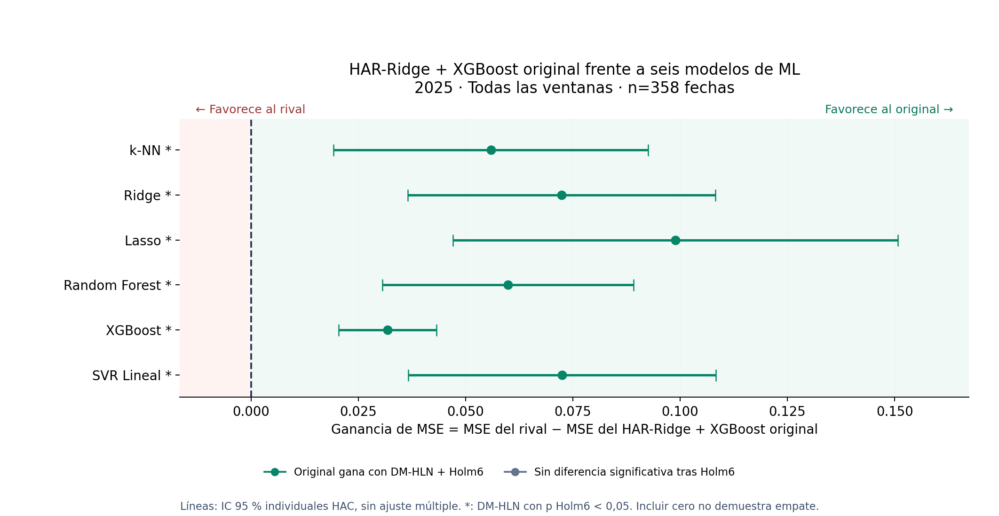
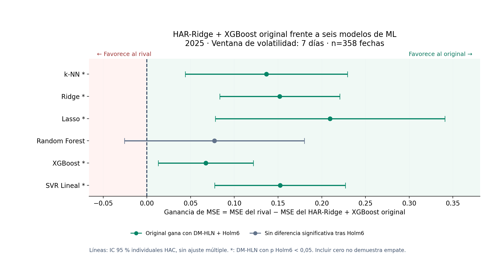
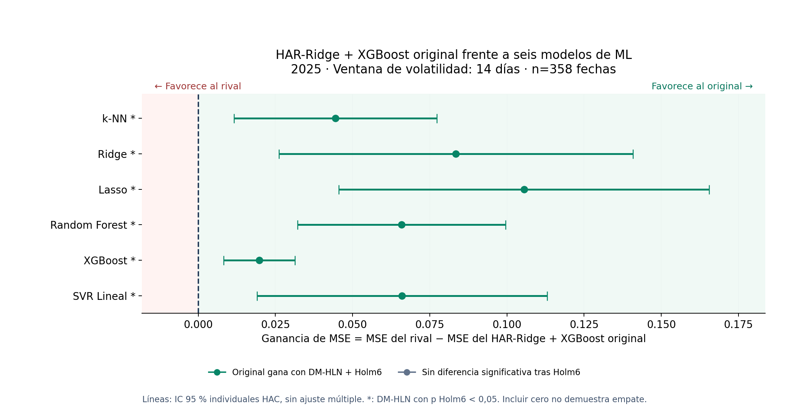
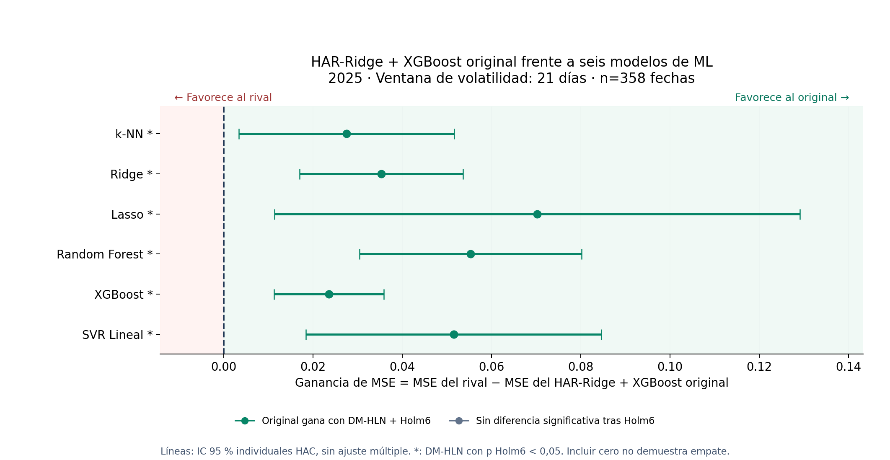
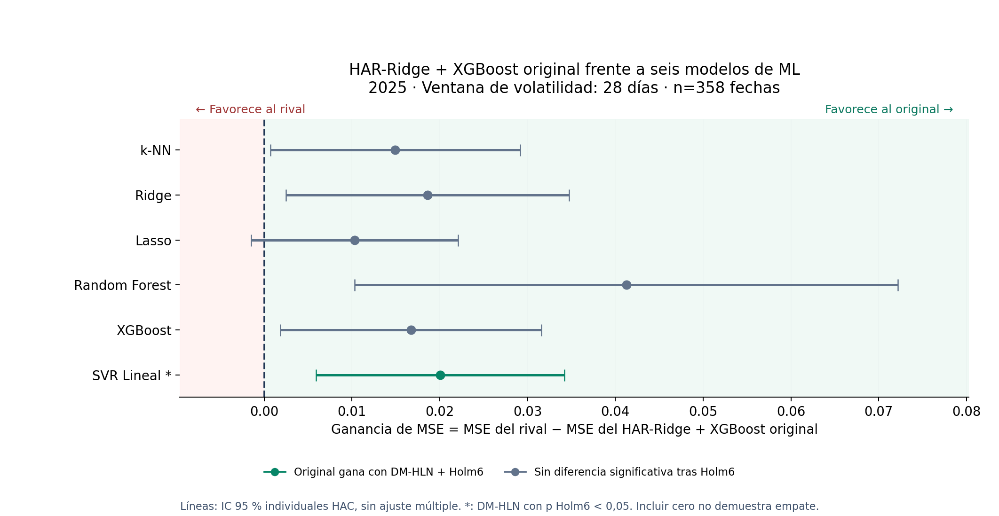
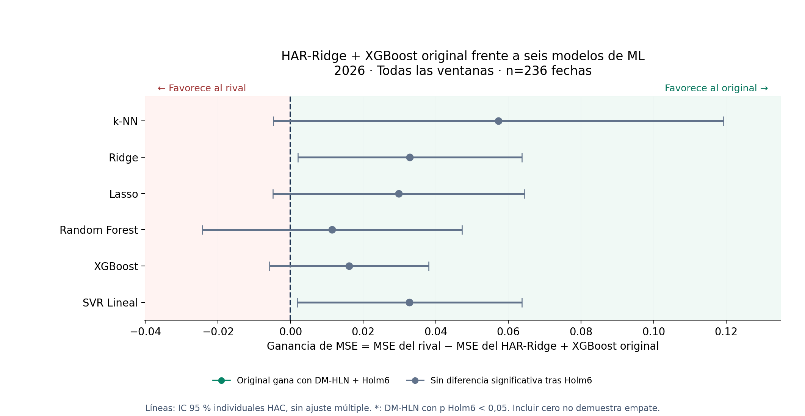
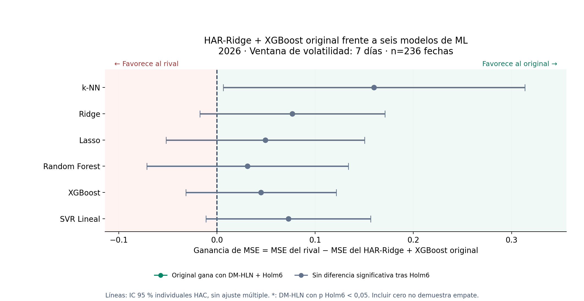
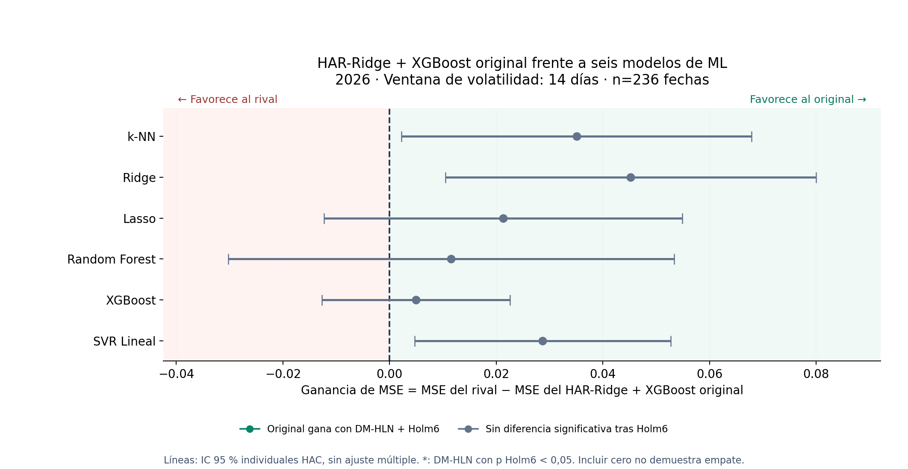
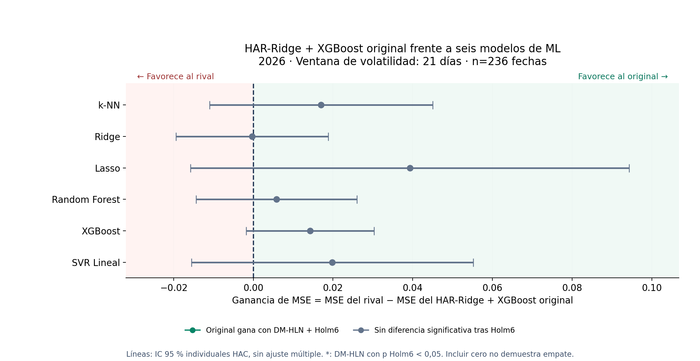
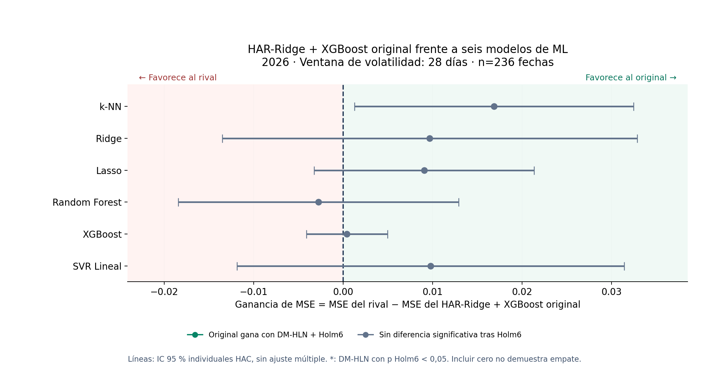

k-NN
Promedia vecinos históricos según la distancia entre características.
Comparación exclusivamente frente a k-NN, Ridge, Lasso, Random Forest, XGBoost y SVR Lineal. Se utilizan las predicciones originales, con las mismas fechas, activos y horizontes para cada pareja.
Promedia vecinos históricos según la distancia entre características.
Regresión lineal con penalización L2.
Regresión lineal con penalización L1.
Combina árboles de regresión.
Añade árboles sucesivos para reducir los errores.
Regresión con margen epsilon y regularización.
Estas filas promedian todas las ventanas, activos y horizontes. 2026 es el periodo principal; 2025 aporta contexto retrospectivo.
| Año | Fechas | MSE original | Victorias del original · Holm6 | Sin diferencia significativa · Holm6 | Victorias del rival · Holm6 |
|---|---|---|---|---|---|
| 2025 | 358 | 0.464681 | 6 | 0 | 0 |
| 2026 | 236 | 0.456042 | 0 | 6 | 0 |
Ganancia MSE = MSE del rival − MSE del original. A la derecha de cero se favorece al original. Un IC completamente a la derecha favorece al original en la comparación individual; a la izquierda favorece al rival. Si incluye cero, hay evidencia insuficiente de una diferencia. Esto no demuestra un empate ni equivalencia.
Los intervalos son IC 95 % individuales HAC. Las estrellas y las victorias ajustadas usan DM-HLN + Holm6, para las seis comparaciones solicitadas contra el original. La tabla conserva además Holm21, el ajuste de los 21 pares entre los siete modelos que aparece en el dashboard anterior. Las dos familias pueden dar resultados diferentes; los IC dibujados no son intervalos simultáneos ajustados por Holm.
358 fechas · rezagos HAC: 33. Holm6: 6 victorias del original, 0 comparaciones sin diferencia significativa y 0 victorias del rival.

| Rival | MSE original | MSE rival | Ganancia MSE | IC 95 % HAC de la ganancia | Resultado IC individual | p Holm6 | Resultado Holm6 | p Holm21 | Resultado Holm21 anterior |
|---|---|---|---|---|---|---|---|---|---|
| k-NN | 0.464681 | 0.520606 | 0.055925 | [0.019249, 0.092600] | Favorece original | 0.003558 | Gana el original | 0.056926 | Sin diferencia significativa |
| Ridge | 0.464681 | 0.537024 | 0.072343 | [0.036501, 0.108185] | Favorece original | 0.000499 | Gana el original | 0.002302 | Gana el original |
| Lasso | 0.464681 | 0.563582 | 0.098900 | [0.047051, 0.150750] | Favorece original | 0.000558 | Gana el original | 0.004741 | Gana el original |
| Random Forest | 0.464681 | 0.524570 | 0.059889 | [0.030606, 0.089173] | Favorece original | 0.000499 | Gana el original | 0.001995 | Gana el original |
| XGBoost | 0.464681 | 0.496539 | 0.031858 | [0.020469, 0.043247] | Favorece original | 0.000001 | Gana el original | 0.000003 | Gana el original |
| SVR Lineal | 0.464681 | 0.537172 | 0.072491 | [0.036599, 0.108384] | Favorece original | 0.000499 | Gana el original | 0.002302 | Gana el original |
358 fechas · rezagos HAC: 12. Holm6: 5 victorias del original, 1 comparaciones sin diferencia significativa y 0 victorias del rival.

| Rival | MSE original | MSE rival | Ganancia MSE | IC 95 % HAC de la ganancia | Resultado IC individual | p Holm6 | Resultado Holm6 | p Holm21 | Resultado Holm21 anterior |
|---|---|---|---|---|---|---|---|---|---|
| k-NN | 1.186401 | 1.323149 | 0.136748 | [0.044002, 0.229495] | Favorece original | 0.014426 | Gana el original | 0.086555 | Sin diferencia significativa |
| Ridge | 1.186401 | 1.338345 | 0.151944 | [0.083233, 0.220656] | Favorece original | 0.000160 | Gana el original | 0.000561 | Gana el original |
| Lasso | 1.186401 | 1.395908 | 0.209507 | [0.078161, 0.340853] | Favorece original | 0.009233 | Gana el original | 0.043855 | Gana el original |
| Random Forest | 1.186401 | 1.263555 | 0.077154 | [-0.025774, 0.180082] | Incluye cero | 0.150037 | Sin diferencia significativa | 1.000000 | Sin diferencia significativa |
| XGBoost | 1.186401 | 1.253739 | 0.067338 | [0.012870, 0.121807] | Favorece original | 0.035764 | Gana el original | 0.303995 | Sin diferencia significativa |
| SVR Lineal | 1.186401 | 1.338715 | 0.152313 | [0.077553, 0.227074] | Favorece original | 0.000529 | Gana el original | 0.002118 | Gana el original |
Relación con la tabla anterior: Holm21 conserva las tres diferencias significativas frente a Lasso, Ridge y SVR Lineal. La familia focal Holm6 también conserva XGBoost y k-NN. Los intervalos se calcularon desde las pérdidas diarias, sin aproximarlos dividiendo la diferencia de MSE entre el DM corregido.
358 fechas · rezagos HAC: 19. Holm6: 6 victorias del original, 0 comparaciones sin diferencia significativa y 0 victorias del rival.

| Rival | MSE original | MSE rival | Ganancia MSE | IC 95 % HAC de la ganancia | Resultado IC individual | p Holm6 | Resultado Holm6 | p Holm21 | Resultado Holm21 anterior |
|---|---|---|---|---|---|---|---|---|---|
| k-NN | 0.368885 | 0.413330 | 0.044445 | [0.011625, 0.077266] | Favorece original | 0.016073 | Gana el original | 0.126796 | Sin diferencia significativa |
| Ridge | 0.368885 | 0.452337 | 0.083452 | [0.026136, 0.140769] | Favorece original | 0.016073 | Gana el original | 0.091083 | Sin diferencia significativa |
| Lasso | 0.368885 | 0.474398 | 0.105513 | [0.045535, 0.165491] | Favorece original | 0.003950 | Gana el original | 0.015799 | Gana el original |
| Random Forest | 0.368885 | 0.434713 | 0.065828 | [0.032129, 0.099527] | Favorece original | 0.001195 | Gana el original | 0.004183 | Gana el original |
| XGBoost | 0.368885 | 0.388671 | 0.019786 | [0.008259, 0.031313] | Favorece original | 0.004212 | Gana el original | 0.020006 | Gana el original |
| SVR Lineal | 0.368885 | 0.434912 | 0.066027 | [0.019067, 0.112986] | Favorece original | 0.016073 | Gana el original | 0.108323 | Sin diferencia significativa |
358 fechas · rezagos HAC: 26. Holm6: 6 victorias del original, 0 comparaciones sin diferencia significativa y 0 victorias del rival.

| Rival | MSE original | MSE rival | Ganancia MSE | IC 95 % HAC de la ganancia | Resultado IC individual | p Holm6 | Resultado Holm6 | p Holm21 | Resultado Holm21 anterior |
|---|---|---|---|---|---|---|---|---|---|
| k-NN | 0.184440 | 0.212005 | 0.027565 | [0.003422, 0.051708] | Favorece original | 0.044253 | Gana el original | 0.429797 | Sin diferencia significativa |
| Ridge | 0.184440 | 0.219793 | 0.035353 | [0.017061, 0.053646] | Favorece original | 0.001160 | Gana el original | 0.004640 | Gana el original |
| Lasso | 0.184440 | 0.254732 | 0.070293 | [0.011434, 0.129151] | Favorece original | 0.044253 | Gana el original | 0.354024 | Sin diferencia significativa |
| Random Forest | 0.184440 | 0.239755 | 0.055315 | [0.030418, 0.080212] | Favorece original | 0.000147 | Gana el original | 0.000515 | Gana el original |
| XGBoost | 0.184440 | 0.208017 | 0.023578 | [0.011288, 0.035867] | Favorece original | 0.001160 | Gana el original | 0.004892 | Gana el original |
| SVR Lineal | 0.184440 | 0.235996 | 0.051557 | [0.018448, 0.084665] | Favorece original | 0.008762 | Gana el original | 0.052572 | Sin diferencia significativa |
358 fechas · rezagos HAC: 33. Holm6: 1 victorias del original, 5 comparaciones sin diferencia significativa y 0 victorias del rival.

| Rival | MSE original | MSE rival | Ganancia MSE | IC 95 % HAC de la ganancia | Resultado IC individual | p Holm6 | Resultado Holm6 | p Holm21 | Resultado Holm21 anterior |
|---|---|---|---|---|---|---|---|---|---|
| k-NN | 0.118999 | 0.133938 | 0.014939 | [0.000714, 0.029165] | Favorece original | 0.107432 | Sin diferencia significativa | 0.660533 | Sin diferencia significativa |
| Ridge | 0.118999 | 0.137620 | 0.018622 | [0.002500, 0.034744] | Favorece original | 0.107432 | Sin diferencia significativa | 0.483445 | Sin diferencia significativa |
| Lasso | 0.118999 | 0.129288 | 0.010290 | [-0.001496, 0.022075] | Incluye cero | 0.107432 | Sin diferencia significativa | 1.000000 | Sin diferencia significativa |
| Random Forest | 0.118999 | 0.160258 | 0.041259 | [0.010335, 0.072183] | Favorece original | 0.053249 | Sin diferencia significativa | 0.202348 | Sin diferencia significativa |
| XGBoost | 0.118999 | 0.135729 | 0.016730 | [0.001860, 0.031601] | Favorece original | 0.107432 | Sin diferencia significativa | 0.527799 | Sin diferencia significativa |
| SVR Lineal | 0.118999 | 0.139066 | 0.020067 | [0.005908, 0.034227] | Favorece original | 0.040202 | Gana el original | 0.134008 | Sin diferencia significativa |
236 fechas · rezagos HAC: 33. Holm6: 0 victorias del original, 6 comparaciones sin diferencia significativa y 0 victorias del rival.

| Rival | MSE original | MSE rival | Ganancia MSE | IC 95 % HAC de la ganancia | Resultado IC individual | p Holm6 | Resultado Holm6 | p Holm21 | Resultado Holm21 anterior |
|---|---|---|---|---|---|---|---|---|---|
| k-NN | 0.456042 | 0.513275 | 0.057234 | [-0.004783, 0.119250] | Incluye cero | 0.319530 | Sin diferencia significativa | 1.000000 | Sin diferencia significativa |
| Ridge | 0.456042 | 0.488895 | 0.032853 | [0.001997, 0.063709] | Favorece original | 0.261295 | Sin diferencia significativa | 0.914533 | Sin diferencia significativa |
| Lasso | 0.456042 | 0.485804 | 0.029762 | [-0.004884, 0.064408] | Incluye cero | 0.319530 | Sin diferencia significativa | 1.000000 | Sin diferencia significativa |
| Random Forest | 0.456042 | 0.467501 | 0.011459 | [-0.024301, 0.047219] | Incluye cero | 0.541949 | Sin diferencia significativa | 1.000000 | Sin diferencia significativa |
| XGBoost | 0.456042 | 0.472173 | 0.016132 | [-0.005824, 0.038087] | Incluye cero | 0.325427 | Sin diferencia significativa | 1.000000 | Sin diferencia significativa |
| SVR Lineal | 0.456042 | 0.488810 | 0.032768 | [0.001830, 0.063707] | Favorece original | 0.261295 | Sin diferencia significativa | 0.914533 | Sin diferencia significativa |
236 fechas · rezagos HAC: 12. Holm6: 0 victorias del original, 6 comparaciones sin diferencia significativa y 0 victorias del rival.

| Rival | MSE original | MSE rival | Ganancia MSE | IC 95 % HAC de la ganancia | Resultado IC individual | p Holm6 | Resultado Holm6 | p Holm21 | Resultado Holm21 anterior |
|---|---|---|---|---|---|---|---|---|---|
| k-NN | 1.053336 | 1.213302 | 0.159966 | [0.006360, 0.313572] | Favorece original | 0.289912 | Sin diferencia significativa | 1.000000 | Sin diferencia significativa |
| Ridge | 1.053336 | 1.130184 | 0.076848 | [-0.017250, 0.170946] | Incluye cero | 0.496502 | Sin diferencia significativa | 1.000000 | Sin diferencia significativa |
| Lasso | 1.053336 | 1.102747 | 0.049411 | [-0.051673, 0.150494] | Incluye cero | 0.795347 | Sin diferencia significativa | 1.000000 | Sin diferencia significativa |
| Random Forest | 1.053336 | 1.084568 | 0.031232 | [-0.071472, 0.133935] | Incluye cero | 0.795347 | Sin diferencia significativa | 1.000000 | Sin diferencia significativa |
| XGBoost | 1.053336 | 1.098253 | 0.044917 | [-0.031724, 0.121558] | Incluye cero | 0.795347 | Sin diferencia significativa | 1.000000 | Sin diferencia significativa |
| SVR Lineal | 1.053336 | 1.126102 | 0.072766 | [-0.011045, 0.156577] | Incluye cero | 0.496502 | Sin diferencia significativa | 1.000000 | Sin diferencia significativa |
236 fechas · rezagos HAC: 19. Holm6: 0 victorias del original, 6 comparaciones sin diferencia significativa y 0 victorias del rival.

| Rival | MSE original | MSE rival | Ganancia MSE | IC 95 % HAC de la ganancia | Resultado IC individual | p Holm6 | Resultado Holm6 | p Holm21 | Resultado Holm21 anterior |
|---|---|---|---|---|---|---|---|---|---|
| k-NN | 0.395552 | 0.430612 | 0.035061 | [0.002225, 0.067896] | Favorece original | 0.171843 | Sin diferencia significativa | 0.773292 | Sin diferencia significativa |
| Ridge | 0.395552 | 0.440759 | 0.045207 | [0.010446, 0.079969] | Favorece original | 0.083334 | Sin diferencia significativa | 0.277779 | Sin diferencia significativa |
| Lasso | 0.395552 | 0.416836 | 0.021284 | [-0.012332, 0.054900] | Incluye cero | 0.686183 | Sin diferencia significativa | 1.000000 | Sin diferencia significativa |
| Random Forest | 0.395552 | 0.407074 | 0.011522 | [-0.030283, 0.053327] | Incluye cero | 1.000000 | Sin diferencia significativa | 1.000000 | Sin diferencia significativa |
| XGBoost | 0.395552 | 0.400487 | 0.004935 | [-0.012729, 0.022599] | Incluye cero | 1.000000 | Sin diferencia significativa | 1.000000 | Sin diferencia significativa |
| SVR Lineal | 0.395552 | 0.424231 | 0.028679 | [0.004678, 0.052681] | Favorece original | 0.118293 | Sin diferencia significativa | 0.449512 | Sin diferencia significativa |
236 fechas · rezagos HAC: 26. Holm6: 0 victorias del original, 6 comparaciones sin diferencia significativa y 0 victorias del rival.

| Rival | MSE original | MSE rival | Ganancia MSE | IC 95 % HAC de la ganancia | Resultado IC individual | p Holm6 | Resultado Holm6 | p Holm21 | Resultado Holm21 anterior |
|---|---|---|---|---|---|---|---|---|---|
| k-NN | 0.225210 | 0.242240 | 0.017031 | [-0.010980, 0.045041] | Incluye cero | 0.990757 | Sin diferencia significativa | 1.000000 | Sin diferencia significativa |
| Ridge | 0.225210 | 0.224884 | -0.000325 | [-0.019437, 0.018786] | Incluye cero | 1.000000 | Sin diferencia significativa | 1.000000 | Sin diferencia significativa |
| Lasso | 0.225210 | 0.264499 | 0.039289 | [-0.015752, 0.094330] | Incluye cero | 0.874848 | Sin diferencia significativa | 1.000000 | Sin diferencia significativa |
| Random Forest | 0.225210 | 0.231048 | 0.005838 | [-0.014331, 0.026007] | Incluye cero | 1.000000 | Sin diferencia significativa | 1.000000 | Sin diferencia significativa |
| XGBoost | 0.225210 | 0.239451 | 0.014241 | [-0.001802, 0.030285] | Incluye cero | 0.551985 | Sin diferencia significativa | 1.000000 | Sin diferencia significativa |
| SVR Lineal | 0.225210 | 0.245038 | 0.019829 | [-0.015544, 0.055201] | Incluye cero | 0.990757 | Sin diferencia significativa | 1.000000 | Sin diferencia significativa |
236 fechas · rezagos HAC: 33. Holm6: 0 victorias del original, 6 comparaciones sin diferencia significativa y 0 victorias del rival.

| Rival | MSE original | MSE rival | Ganancia MSE | IC 95 % HAC de la ganancia | Resultado IC individual | p Holm6 | Resultado Holm6 | p Holm21 | Resultado Holm21 anterior |
|---|---|---|---|---|---|---|---|---|---|
| k-NN | 0.150069 | 0.166946 | 0.016877 | [0.001275, 0.032479] | Favorece original | 0.242018 | Sin diferencia significativa | 0.847064 | Sin diferencia significativa |
| Ridge | 0.150069 | 0.159752 | 0.009682 | [-0.013514, 0.032878] | Incluye cero | 1.000000 | Sin diferencia significativa | 1.000000 | Sin diferencia significativa |
| Lasso | 0.150069 | 0.159133 | 0.009064 | [-0.003236, 0.021364] | Incluye cero | 0.807386 | Sin diferencia significativa | 1.000000 | Sin diferencia significativa |
| Random Forest | 0.150069 | 0.147314 | -0.002755 | [-0.018436, 0.012925] | Incluye cero | 1.000000 | Sin diferencia significativa | 1.000000 | Sin diferencia significativa |
| XGBoost | 0.150069 | 0.150503 | 0.000433 | [-0.004107, 0.004973] | Incluye cero | 1.000000 | Sin diferencia significativa | 1.000000 | Sin diferencia significativa |
| SVR Lineal | 0.150069 | 0.159870 | 0.009800 | [-0.011840, 0.031441] | Incluye cero | 1.000000 | Sin diferencia significativa | 1.000000 | Sin diferencia significativa |
Para cada rival se forma gₜ = pérdida cuadrática del rival − pérdida cuadrática del original y se estima su media. El intervalo es media(gₜ) ± 1,959964 × SE HAC de esa media, con autocovarianzas de denominador n y pesos Bartlett. El SE se calcula directamente desde esa serie temporal emparejada. La dependencia entre activos y horizontes se conserva promediando dentro de cada fecha.
Cada fecha global contiene 112 pronósticos: cuatro activos × cuatro ventanas × siete horizontes. Cada ventana contiene 28. El número de observaciones de inferencia es 358 días en 2025 y 236 en 2026. HAC usa 33 rezagos globalmente y ventana + 5 en cada ventana. DM usa la corrección HLN con horizonte 7 y distribución t con n−1 grados de libertad; los intervalos normales individuales no incorporan esa corrección.
Holm6 controla las seis comparaciones contra el original dentro de cada periodo y vista. Holm21 controla los 21 pares de esos siete modelos por vista. No se aplica un ajuste conjunto a las diez vistas. Ambos periodos ya se inspeccionaron, por lo que el análisis es retrospectivo; un IC que cruza cero no demuestra equivalencia.
Los intervalos se calcularon a partir de los pronósticos originales congelados, sin entrenar ni reemplazar modelos. Este informe publica las gráficas y tablas verificadas de la comparación contra los seis modelos de ML.
Resumen de las diez vistas · Todas las comparaciones contra el original · Protocolo · Verificación. Fuentes: Newey–West, DM-HLN y Bartlett, Holm.